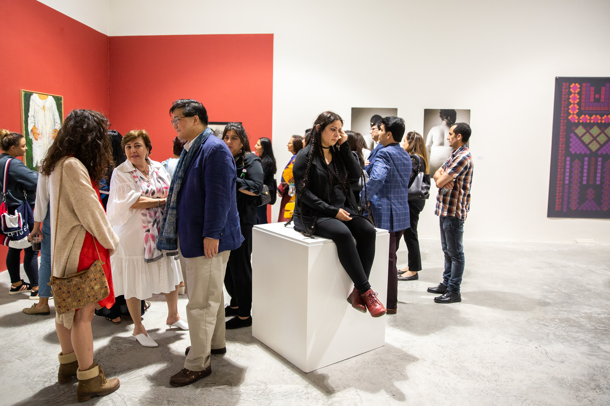

It begins with a small gallery snuggled in the attic of a tiny bookshop in the Syrian city of Homs. The year is 1986 and two sisters, Mouna and Mayla Atassi, have set in motion an artistic legacy that surely neither of them at the time can even imagine. Within a few years, that small gallery will have metamorphosed into two full-fledged private commercial galleries – the Atassi Gallery in Damascus and Green Art Gallery in Dubai, run by Mouna and the late Mayla respectively.
Those familiar with the Middle Eastern arts scene will also be familiar with these two historically significant galleries, for both were pioneers in promoting Syrian artists, such as Fateh Moudarres, Ahmed Moualla, and Abdulla Mourad. Fast-forward some four decades, and much has evolved. Green Art Gallery is in its second iteration under the leadership of Mayla’s daughter, Yasmin Atassi, while the Atassi Gallery itself has closed its doors amongst the ongoing upheaval in Syria.
It is here that the story of the Atassi Foundation truly begins, for, during all those decades, Mouna and her husband Sadek, both enthusiastic collectors and patrons of Syrian art, also amassed a significant private collection. The closure of Atassi Gallery and the logistical difficulties involved in any such enterprise currently in Syria led them to establish the Foundation as a way to reach a wider international audience. That is, to share, promote, and educate people worldwide on the rich history of Syrian artistic practice. Spanning hundreds of pieces by nearly 80 artists, the collection is a comprehensive snapshot of the entire period of the 20th century up to the present day. Based out of Dubai, it is run by Mouna’s daughter Shireen Atassi, the Foundation’s Director.

Mouna (second from left) and Mayla Atassi (second from right)
at Al Hanager Art Centre in Cairo where Mouna exhibited the works
of Marwan for the first time in 1996 . The exhibition was shown
first in Damascus and then in Cairo and then in Darat Al Funnun
in Amman — all organised by Atassi Gallery.
(Image courtesy Atassi Foundation, as part of Atassi Gallery Archive)
Launched in 2016, the following year the Atassi Foundation made a splash with its museum-quality exhibition Syria: Into the Light at the OMA-designed Concrete in Alserkal Avenue. Since then, it has organised exhibitions such as In The Age of New Media (November-December 2018) and Personal Revolutions (March-April 2019) – exploring the digital world and its impact on artistic production, and pioneering female artists in Syria respectively. Other initiatives include the funding of artist residencies, a digitisation project entitled MASA, and its digital e-publication, The Journal. Here, Shireen Atassi expands on the Foundation’s activities.
What was the process of establishing the Atassi Foundation?
Overall, the Foundation is a natural progression of Atassi Gallery’s role in the art and culture scene. After decades as a gallerist, Mouna had been looking to set up a non-profit space/initiative as early as 2010. She found a location in Damascus when she was still living there, and she began lobbying for the set up of a non-profit space. Her attempts, however, were short-lived, as the revolt started in March 2011. As a result she, along with the collection and the rest of the family, relocated to Dubai. After that, it took a while longer for the idea of setting up the foundation to mature and for us to find the right jurisdiction for its inception.
Why Dubai?
For us, the Foundation was an act of resistance against the destruction and violence that prevailed in our home country, and Dubai was a natural launch pad for our initiative. Interestingly, however, we are not registered in Dubai, but Liechtenstein (the UAE regulatory environment does not allow for non-profits to be set up, although things are slowly changing now). In spite of that, the majority of our exhibitions and activities to date have taken place in this city. It is quite a unique situation, with the UAE in general, and Dubai in particular being such an important platform for arts for the entire region. Dubai has seen us launch the Foundation, exhibit our collection, and run our programmes since 2015.
As you say, the strength of any non-profit venture is in its partnerships and the Foundation has an amazing Advisory Committee, including Henry Kim, CEO of the Aga Khan Museum.
Our advisory committee was our first step to institutionalise the work of the Foundation and comprises individuals who bring in expertise from different areas such as programming, academia, artists, business, and the gallery world – both Syrian and non-Syrian. We considered the depth and breadth of each individual’s expertise in various areas that matter to us, as we wanted people who genuinely bought into our mission, which was essential to ensure the committee delivers on its designed role.

Left: Mouna Atassi and Henry Kim at Personal Revolutions at
Alserkal Avenue in March 2019.
You are also partnered up with entities such as Delfina Foundation, Shubbak Festival and, of course, Alserkal Avenue.
Alserkal Avenue is a special partner – they extended a wonderful opportunity by offering Concrete as a venue not just to launch the Foundation, but as the inaugural exhibition in the space itself.
So, what sets Atassi Foundation apart from every other non-profit?
We are the only Syrian family non-profit initiative that focuses on art and culture, and are genuinely passionate about promoting, supporting, and preserving Syrian art. We found ourselves with the right resources – our collection and its historical breadth, network, knowledge, and expertise. Setting up the Foundation was the one thing that we could do to make use of these resources. Furthermore, Mouna has worked closely with some of Syria’s top artists – she is a cornerstone of the art scene. That expertise is difficult to emulate!
What about the Modern Art Syria Archive (MASA) project? The only other comparable digitisation project that comes to mind is being undertaken by the Palestinian Museum?
MASA is an ambitious and complicated project and, in time, will form the core of Atassi Foundation’s programming in terms of research and knowledge building. It entails the creation of an online archive that documents the history of art in Syria in the 20th century. It is quite unique in the sense that it involves digitisation, research and publication. We believe that projects that document heritage should be a priority in the region given its volatility, and also given its rich culture. We expressed our desire to create MASA about a year ago. Today, we are in the process of conducting a field survey of some archive collections in Syria, and re-defining our execution strategy and plan, which will include recruiting a suitable team and partnering up with a key international institution.
Mouna and Shireen Atassi during In the Age of New Media
at Alserkal Avenue.
What are some of the challenges?
One we are facing is related to the availability of the dual language expertise in specialised areas of research and cataloguing. Another area we are challenged in currently is funding. This kind of project is long term, and it requires proper backing in order to ensure it delivers on the value promise. I am not going to mention the challenges of working remotely with archive collections that are based in Syria, because we are working on bridging this challenge.
You’ve also established The Journal, a digital publication that combines academic essays on topics pertinent to Syrian art and art history with profiles on contemporary artists, artworks and more… why?
Not only does it complement our programming, but it supports our mission by helping encourage inquiry into Syrian art. Each of the issues is themed, which means that we are shedding light on various areas relating to Syrian art. As mentioned above, Syrian art has been ignored - few people went ahead and wrote about, researched it, or even exhibited Syrian art. The Journal is meant to encourage further research and inquiry.
Foundations like Atassi are important in their drive to transcend politics and focus on the power of the arts, and support the artists themselves. Having said that, the very existence of the Foundation, and the challenges faced by many - if not most - of its artists today are due to what is happening within Syria. Do you ever find this a tricky line to navigate?
The Foundation is not our answer to the war but rather, an outcome of accumulated knowledge and passion. It just so happened that the war gave us more impetus, and probably created the urgency for us to set up Atassi Foundation.
We hope we are building the foundations for our work when the war stops, and the security situation improves. We deeply believe in the role of art and culture in understanding our past, our present, and therefore make better judgement for the future. It is quite surreal that we currently have no programmes running in Syria. Is it difficult to keep our work independent from the political situation on the ground? Yes and no. Whilst the Foundation is independent, and our work is certainly not defined by the conflict, many of the artists’ works (and lives) have very much been defined by this violence and displacement. So, in this sense, our work is quite defined by the experiences of each and every Syrian.
What is the future?
Today the Foundation has no permanent home. This is a choice we have consciously taken, and at this time it doesn’t matter where the Foundation is. Naturally when the situation in Syria changes, our presence on the ground will have to be re-examined. Over the years, we will have to adapt to different circumstances but our essence will remain unchanged, and we will ensure that we are flexible enough to work with new settings under new circumstances.
The Journal can be accessed here.
Shireen Atassi will be speaking as part of a talk on Syrian art at the 2019 Shubbak Festival, hosted by the British Museum in London, on 7 July. To read more, click here.
About Anna Wallace-Thompson
Anna Wallace-Thompson is a London-based Senior Writer & Editor at Sotheby’s Proposals department. An arts writer specialising in Middle Eastern art and culture as well as tech-based artistic practices, Wallace-Thompson previously spent 10 years with Canvas, the premier magazine for Middle Eastern art and culture. Most recently, she worked at Condé Nast Britain, where she was Deputy Editor of contract publishing, working closely with clients such as Deutsche Bank Wealth Management and Swarovski. She also edits The Journal, produced by the non-profit Atassi Foundation to promote Syrian art and artists worldwide. Graduating in 2003 from Helsinki University with a BA in English Philology, she received her MA in English Literature from Sydney University in 2005. Wallace-Thompson has contributed to publications including Alef, Artforum, Artsy, Art in America, Art Review, The Art Newspaper, Canvas, Contemporary Practices, Frieze, Harper's Bazaar Art Middle East and RA Magazine among others.
 We are the only Syrian family non-profit initiative that focuses on art and culture, and are genuinely passionate about promoting, supporting, and preserving Syrian art." — Shireen Atassi
We are the only Syrian family non-profit initiative that focuses on art and culture, and are genuinely passionate about promoting, supporting, and preserving Syrian art." — Shireen Atassi